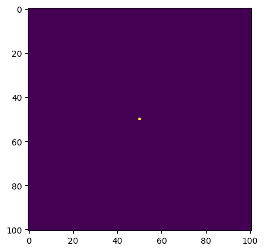
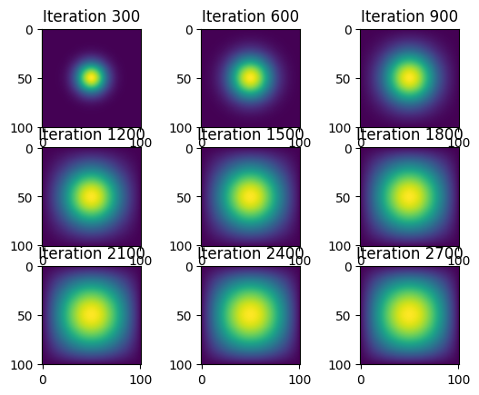

#given in blog post directions
import numpy as np
from matplotlib import pyplot as plt
import jax
import jax.numpy as jnp
import time
from jax.experimental import sparse
import inspectHeat Diffusion in Two Dimensions: Comparing Simulation Methods
Introduction: Heat Diffusion Explained
Although we have taken the time to explore heat diffusion in one dimension, heat diffusion in two dimensions uses an updated equation and different steps.
For our demonstrations today, we will set N = 101 and episilon = 0.2.
Additionally, we will use the following intitial condition (same as the lecture for one dimensional heat diffusion) to explore today’s question.
First we must download the necessary packages. Numpy will allow us to work with arrays. Matplotlob will allow us to make visualizations. Jax allows us to complete complex numerical computing projects.
Now that we have introduced today’s topics and imported the necessary Python packages, let’s explore the different methods of stimulating two dimensional heat diffusion.
Method 1: Matrix Multiplication
First we must include the following function which was given to us in the assignment directions. This function allows us to work with the different iterations of the function and compare our results.
@jax.jit # decorator that tells the function to use XLA for computing
def advance_time_matvecmul(A, u, epsilon):
"""
Advances the simulation by one timestep, via matrix-vector multiplication
Args:
A: The 2d finite difference matrix, N^2 x N^2.
u: N x N grid state at timestep k.
epsilon: stability constant.
Returns:
N x N Grid state at timestep k+1.
"""
# u is NxN, so this is how we determine the size of u
N = u.shape[0]
# perform matrix vector multiplication with A and u, then reshape to proper size
# multiply by chosen epsilon as a stability constant to control timstep size
# add this product to u in order to update it
u = u + epsilon * (A @ u.flatten()).reshape((N, N))
# return updated u
return uN = 101
epsilon = 0.2
u0 = np.zeros((N, N))
u0[int(N/2), int(N/2)] = 1.0
plt.imshow(u0)
Next, we will import the get_A(N) function from our seperate python file (heat_equation.py). This file must be saved in the same folder on your device as this Jupyter notebook file. Our first matrix is similar to the one dimensional matrix that we worked with in lecture.
def get_A(N):
"""
Creates a (N^2xN^2) finite difference matrix A to be used in heat diffusion, without all 0 rows or columns.
Args:
N: the square root of the row and column sizes of A
Returns:
A: The 2d finite difference matrix with dimensions (N^2xN^2).
"""
n = N * N
# create proper entries for 2d heat diffusion
diagonals = [-4 * np.ones(n), np.ones(n-1), np.ones(n-1), np.ones(n-N), np.ones(n-N)]
# rest of the entries are 0s
diagonals[1][(N-1)::N] = 0
diagonals[2][(N-1)::N] = 0
# create A
A = np.diag(diagonals[0]) + np.diag(diagonals[1], 1) + np.diag(diagonals[2], -1) + np.diag(diagonals[3], N) + np.diag(diagonals[4], -N)
return AGiven that we implement the conditions given to us in the problem, we will receive the resulting array.
solutions = dict()
start_time = time.time()
# obtain finite difference matrix
A = get_A(N)
fig, axs = plt.subplots(3,3)
for i in range(2700):
# run the iteration
u0 = advance_time_matvecmul(A, u0, epsilon)
# store immediate solution
solutions[i] = u0
end_time = time.time()
total_time = end_time - start_time
# we don't want to waste time visualizing, so now we will utilize the solutions object to plot
for i in range(2700):
if (i + 1) % 300 == 0:
ax = axs[i // 300 // 3, i // 300 % 3]
ax.imshow(solutions[i])
ax.set_title(f'Iteration {i+1}')
# see how long it took to run the simulation (NOT including plotting time)
print(f"time it took: {total_time:0.2f} sec")time it took: 828.93 sec
Now that we have successfully created our array, we must create a heatmap visulaization. Please follow the steps below to see our resulting heat maps that show our results every 300 iterations for 2700 total iterations. Additionally, we will also implement features of the time package that allows us to identify the time we start our iterations and the time 2700 iterations finishes. We will output this information with our diffusion plots so that we can compare the elapsed time with the other methods.
Method 2: Sparse Matrix (JAX)
In this secind method, the matrix A will be returned in sparse format. Moreoverm we will be utilizing the batched coordinate format (BCOO) and take in a slightly different value than the matrix we created above. Please follow the steps below to create our resulting array.
def get_sparse_A(N):
"""
Creates finite difference matrix that is sparse.
Args:
N: the square root of the row and column sizes of A
Returns:
A: the N^2 x N^2 finite difference matrix A that is in sparse format
"""
n = N * N
# create proper entries for 2D heat diffusion in matrix-vector multiplication
# utilize jax.numpy in order to be compatible with jax's XLA compiler
diagonals = [-4 * jnp.ones(n), jnp.ones(n-1), jnp.ones(n-1), jnp.ones(n-N), jnp.ones(n-N)]
# make the other rows and columns 0
diagonals[1] = diagonals[1].at[(N-1)::N].set(0)
diagonals[2] = diagonals[2].at[(N-1)::N].set(0)
# create A
A = jnp.diag(diagonals[0]) + jnp.diag(diagonals[1], 1) + jnp.diag(diagonals[2], -1) + jnp.diag(diagonals[3], N) + jnp.diag(diagonals[4], -N)
# use batched coordinate format from Jax to use less space in the matrix
A_sp_matrix = sparse.BCOO.fromdense(A)
return A_sp_matrix# redefine u0 (since it was used in our last simulation)
u0 = np.zeros((N, N))
u0[int(N/2), int(N/2)] = 1.0
# get sparse matrix format of A
A_sparse = get_sparse_A(N)
# run the simulation
solutions = dict()
start_time = time.time()
fig, axs = plt.subplots(3,3)
for i in range(2700):
u0 = advance_time_matvecmul(A_sparse, u0, epsilon)
# store immediate solution
solutions[i] = u0
end_time = time.time()
# calculate total time for simulation, not including visualization
total_time = end_time - start_time
# visualize
for i in range(2700):
if (i + 1) % 300 == 0:
ax = axs[i // 300 // 3, i // 300 % 3]
ax.imshow(solutions[i])
ax.set_title(f'Iteration {i+1}')
print(f"time it took: {total_time:0.2f} sec")time it took: 1.27 secWe can confirm that we have correctly implemented our sparse function because we successfully created the same array as method 1, using a completely different method.
This array resembles the array we created with the function get_A(N). This is a good indication that we successfully implemented our get_A_sparse(N) function. Now, please follow the next function to create our visulization. In this next code cell, please note that we also found a method of determining the total elapsed time as we also did in method 1.
Method 3: Direct Operation (Numpy)
For our third method of creating our array and visualization, we will be able to achieve our result through a different sort of computation. This method works best with Poisson equations and may not be the most efficient implementation of heat diffusion. This function involves lots of Numpy principles which is the Python package that allows us to work with arrays. Please follow the code cell below to see how I created this function.
def advance_time_numpy(u, epsilon):
"""Advances the simulation by one timestep, utilizing vectorized numpy operations
Args:
u: N x N grid state at timestep k.
epsilon: stability constant.
Returns:
N x N Grid state at timestep k+1.
"""
# get N
N = u.shape[0]
# pad edges with 0s to handle boundary finite differences
u_pad = np.pad(u, pad_width=1, mode='constant', constant_values=0)
# calculate difference btwn each element of u and its 4 neighboring terms
# -1 is subtracted 4 times in this equation,
# multiply by epsilon
u_new = u + epsilon * (-4*u_pad[1:-1, 1:-1] + u_pad[:-2, 1:-1] + u_pad[2:, 1:-1] + u_pad[1:-1, :-2] + u_pad[1:-1, 2:])
return u_newAfter importing the function, we will now create our visualization and determined our elapsed time. As we defined this function in a slightly different way than the functions of the first two methods, the lines that we use to create our visualization will also be different. However, we will still be using the time function to determine the length of time from when our iterations start to when we reach iteration 2700. Please follow the code below.
# redefine u0 (since it was used in our last simulation)
u0 = np.zeros((N, N))
u0[int(N/2), int(N/2)] = 1.0
# run the simulation
solutions = dict()
start_time = time.time()
fig, axs = plt.subplots(3,3)
for i in range(2700):
u0 = advance_time_numpy(u0, epsilon)
# store immediate solution
solutions[i] = u0
end_time = time.time()
# calculate total time for simulation, not including visualization
total_time = end_time - start_time
# visualize
for i in range(2700):
if (i + 1) % 300 == 0:
ax = axs[i // 300 // 3, i // 300 % 3]
ax.imshow(solutions[i])
ax.set_title(f'Iteration {i+1}')
print(f"time it took: {total_time:0.2f} sec")time it took: 0.62 sec
As seen in our images above, we have 9 iterations that occur every 300 iterations out of 2700. These iterations are labeled so that a viewer can see and easily understand the two dimensional heat diffusion that occurs. Our elapsed time is 1.4257 seconds for all 2700 iterations to run. We will keep this value in mind so that we may compare it in our conclusion (section 5).
Method 4: JAX
The final method we look at will create our array using JAX operations. The Jax package in python allows us to complete complex numerical computations in a more efficient and clear way. In this method, we do not implement the sparse matrix multiplication processes as we have above. Please follow the code cell below and implement the function for our final method.
@jax.jit
def advance_time_jax(u, epsilon):
"""Advances the simulation by one timestep, via jax operations
Args:
u: N x N grid state at timestep k.
epsilon: stability constant.
Returns:
N x N Grid state at timestep k+1.
"""
# get N
N = u.shape[0]
# pad edges with 0s to handle boundary finite differences
u_pad = jnp.pad(u, pad_width=1, mode='constant', constant_values=0)
# update u for 2d heat diffusion accordingly
u_new = u + epsilon * (-4*u_pad[1:-1, 1:-1] + u_pad[:-2, 1:-1] + u_pad[2:, 1:-1] + u_pad[1:-1, :-2] + u_pad[1:-1, 2:])
return u_newNow that we have successfully imported our function, we can create our final two-dimensional heat diffusion visualization. This will be created using a function that is very similar to the one we created for method 3. Additionally, we will also be recording the elapsed time for our iterations to occur.
# redefine u0 (since it was used in our last simulation)
u0 = np.zeros((N, N))
u0[int(N/2), int(N/2)] = 1.0
# run the simulation
solutions = dict()
start_time = time.time()
fig, axs = plt.subplots(3,3)
for i in range(2700):
u0 = advance_time_jax(u0, epsilon)
# store immediate solution
solutions[i] = u0
end_time = time.time()
# calculate total time for simulation, not including visualization
total_time = end_time - start_time
# visualize
for i in range(2700):
if (i + 1) % 300 == 0:
ax = axs[i // 300 // 3, i // 300 % 3]
ax.imshow(solutions[i])
ax.set_title(f'Iteration {i+1}')
print(f"time it took: {total_time:0.2f} sec")time it took: 0.32 sec
We have successfully created our final set of visualizations!! The 2700 iterations took about 3.8895 seconds to complete. Now, we can finally look back on our different methods and compare.
Comparison of Methods
Although some methods may be more efficient than others, they are all equally effective at modelling two dimensional heat diffusion. Method 1 took ___ for all iterations to occur. Method 2 took ___ for all iterations to occur. Method 3 took ____ for all iterations to occur. Method 4 took ___ for all methods to occur. Therefore, ____ is the fast function we implemented. In my opinion, ___ was the easiest to write ____. Regardless of which was the easiest or fastest method for this specific situation, it is important to learn and understand all four methods because different methods will be useful for different situations we will encounter in this class.
Thank you for reading!